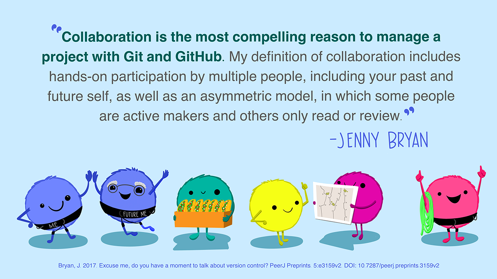
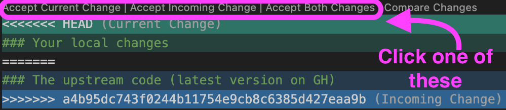
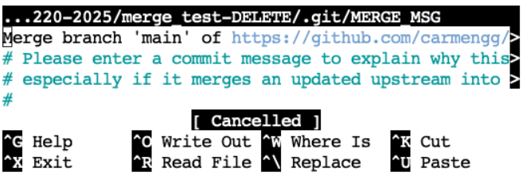

Merge conflicts
Git tracks changes by noting which lines of code have changed - you can only add, delete, or change (delete then add) a line at a time. When collaborating with others on coding tasks, occasionally two people try to change the same line at the same time. This results in a merge conflict!
In this activity we will:
Create and resolve a merge conflict individually on a Quarto file.
Resolve a git merge commit on a Quarto file.
Create and resolve merge conflicts on Quarto file with a partner.

Setup (everyone, individual)
Log in to GitHub.
Create a new repository on GitHub. Use the following settings:
Repository name:
merge_test_YOURLASTNAME.Description: Repo to practice resolving git merge conflicts (delete later).
Visibility: Keep the repository public.
Don’t select any template to start.
Add a README file.
Add a Python .gitignore template.
No license.
On your personal computer and using VSCode, clone your repository.
Update the default method for pulling into repository by running this line of code in the terminal:
git config pull.rebase falseThis establishes that the default strategy for pulling is that git will first try to auto-merge the files. If auto-merging is not possible, it will then indicate a merge conflict.
Activity 1: merge conflict
Step 1 (@ personal computer): Write some code
Create a new Quarto document called
merge_test_YOURLASTNAME.qmd.Add this YAML header to specify which jupyter kernel will be used to render the file:
---
jupyter: eds220-env
---- Copy the following code into a Python code chunk in your Quarto file:
import pandas as pd
import numpy as np
# Create a test 10x3 dataframe
df = pd.DataFrame({
"A": np.arange(1, 11),
"B": np.random.randint(10, 100, size=10),
"C": np.random.choice(["w", "x", "y", "z"], size=10)
})
print(df)
# Select rows subset
subset = df[df['C'] == 'w']
print("Subset has ", len(subset), "rows.")- Examine the code, make sure you understanding what it is doing! Preview the output by running
quarto preview merge_test_YOURLASTNAME.qmdSave your file, pull, commit, and push your updates to GitHub.
Go over to GitHub and look at your repository. Your Quarto file is now upstream!
Step 2 (@ workbench): Clone repo and update code
Clone the
merge_test_YOURLASTNAMErepository to your workbench-1 workspace.In the terminal, run
git config pull.rebase falseOpen the Quarto file and update the selection code to select a different letter.
Preview the output by running
quarto preview merge_test_YOURLASTNAME.qmdSave and try to pull. What does it tell you and why?
Commit, pull, and push your changes. Do your changes go through? Why or why not?
Go over to GitHub and look at your repository. Your updated Quarto file is now upstream!
Step 3 (@ personal computer): Update code without pulling changes
Let’s go back to the repo merge_test_YOURLASTNAME in your personal computer.
Do not pull. Not pulling when you re-engage with your work is a bad practice! But we need to do it in order to create the merge conflict. 😈
Update the selection again to be a different letter. You may preview the ouput if you want.
Save and commit your work, then try to pull again. What does it tell you? Read the message carefully!
Congrats, you’ve created a merge conflict!
Step 4 (@ personal computer): Resolve merge conflict
Don’t panic!
Look at the Quarto document and identify where the conflict has occurred:
<<<<<<< HEAD
### Your local changes
=======
### The upstream code (latest version on GH)
>>>>>>> a4b95dc743f0244b11754e9cb8c6385d427eaa9bDecide what to do with the code inside the
<<<<<<<and>>>>>>>. Four options:- Keep your new code!
- Keep your upstream code!
- Combine the best parts of code from each!
- Delete it all and write something completely different!
Resolve the conflict. On VSCode you can use the IDE buttons at the top of the conflict:

Or you can also manually edit the file by deleting the boundary lines around the merge conflict (the lines containing <<<<<<<, =======, and >>>>>>>).
- Once you are done resolving the conflict, save your work, commit (explaining how you resolve it), pull, and push.
NOTE: sometimes, multiple conflicts may have occurred in different places in the same script, or in separate scripts. You must resolve them all before you can wrap up the merge conflict.
- Celebrate! 🎉
git pull before starting to update your code!
If you are your only collaborator, the safest way to avoid creating merge conflicts with yourself is to always run git pull when you start working locally.
Activity 2: merge without issues
We don’t necessarily get a merge conflict every time that a file is modified separately more than once. Sometimes git actually tries its best and is able to reconcile the two versions. Conflicts often happen when the same line of code is being udpated. Here we’ll see an example of a merge gone right.
Setup
Do
git pullon your personal computer.Do
git pullon workbench-1.
Now we are sure we have the latest version of the file on both computers.
Step 1 (@ personal computer): Update code
Update some of the code that is creating the data frame. Perhaps update the letters or numbers that are selected or the column names, or the shape of the data frame. Do not update any other code.
Commit, pull, and push your changes.
Step 2 (@ workbench): Update code (a different section)
Do not pull. We already know better, but let’s pretend we were distracted today and we forgot!
Update the code that subsets the dataframe by selecting a different letter. Notice we are not updating the same code as before.
Save and commit your work, then try to pull again. What does it tell you? Read the message carefully!
Step 3 (@ workbench): Commit the merge
There were no merge conflicts because git tried it’s best and managed to merge your code with the upstream code. However, git still needs to create a merge commit message. So, it opens a text editor where you can update the draft merge commit message.
Make any updates to the git merge message. This is optional, you can just keep the default message.
If the text editor looks like this, you are in
Vim:
Merge branch 'main' of https://github.com/carmengg/merge_test-DELETE
# Please enter a commit message to explain why this merge is necessary,
# especially if it merges an updated upstream into a topic branch.
#
# Lines starting with '#' will be ignored, and an empty message aborts
# the commit.
~
~
~
~ Update the message if needed. To exit the editor:
- Press
Esc - Type
:wq(which means write and quit) - Press
Enter
- If the text editor looks like this, you are in
nano:

Update the message if needed. To exit the editor:
- Press
CTRL + O(the letter O, not zero) to save. - Press
Enterto confirm the file name. - Exit the editor by pressing
CTRL + X.
- Congrats! You merged without conflicts! 🎊
git pull before starting to update your code!
Even if merge commits are not a big deal, the best practice is to keep your git history clean by running git pull when you start working.
Activity 3: create and resolve merge conflict in pairs
For this activity, pair up with a partner and assign roles for team member 1 and 2. We will test if you’re able to create and resolve a git merge conflict!
Team member 1: Send team member 2 the link to your
merge_test_YOURLASTNAME. GitHub repository.Team member 2: Clone team member 1’s repository to your local computer using VSCode.
In the terminal, run
git config pull.rebase false- As a team, work to create a merge conflict that team member 1 can resolve. Decide:
- Who needs to update what file?
- When should each of you push or pull?
Now try creating another merge conflict so that team member 2 can resolve it.
Discuss: what are some best practices you can follow with a team to avoide having merge conflicts?
Clean your workspace
We won’t be using any of these repositories later ib. So:
- delete all files from your local computer and the workbench associated with this activity,
- delete the
merge_test_YOURLASTNAMErepository on GitHub.